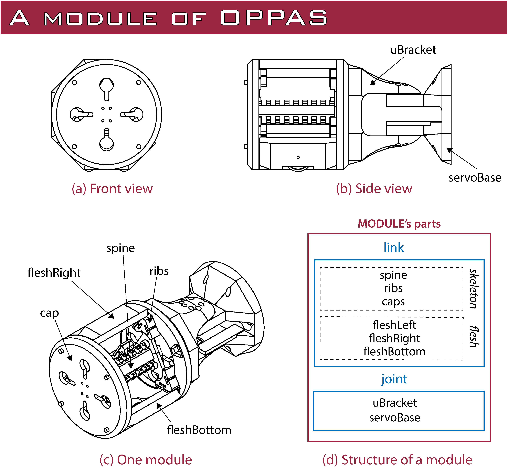
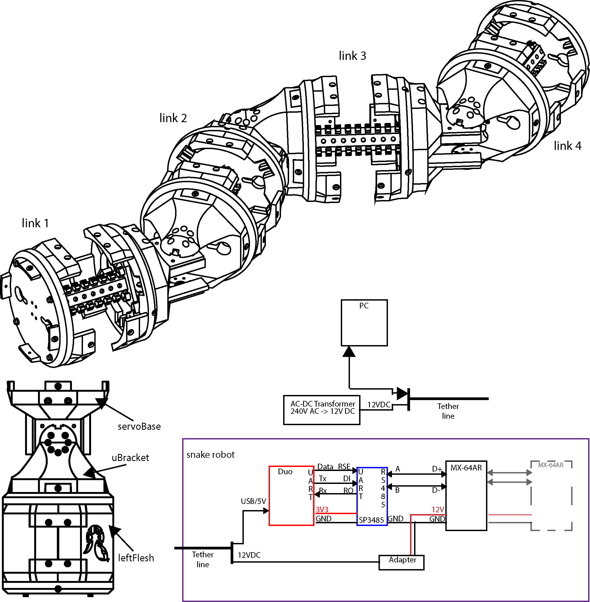

Introduction to OPPAS
The main idea of OPPAS is to provide a platform for developers interested in snake robots or similar. A module of OPPAS consists of a link and a joint. A link and joint are further divided into the following parts:

The main idea of the design of parts was to separate the parts according to their role in the robot:
- Skeleton: The spine, ribs and caps provide the main (kinematic) structure of the robot. It provides the main shape and can also be used as a base for the components.
- Flesh: It provides the interface between the robot and the exterior. At the same time it protects the components (i.e., do not allow the boards and cables to be completely exposed).
- Joint: The servos or other actuators are mounted at the joint, providing motion.
Overview of OPPAS and electronic setup
Currently, the servos chosen for OPPAS are Dynamixel MX-64AR servomotors from ROBOTIS. The microcontroller used is a Duo (RedBear) along a Rs-45 transceiver for communication with the servos. A library and extra hardware has been developed and documented in DuoDMXL. Then, a multi-link OPPAS along an overview of the electronics can be represented in the following picture:

A microcontroller is mounted on OPPAS and serves the role of main microcontroller on the robot. It controls all the servos and in future implementations it will also gather readings from sensors and finally communicate with an external computer. The final objective of OPPAS is to have a closed-loop system.